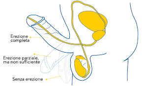

Pubblicato - 10:44 AM
Un'erezione forte e sana entro i 75 anni è essenziale: 60 gocce di questo rimedio possono curare la disfunzione erettile (non è Viagra)
Partiamo dalle statistiche: vari studi clinici hanno dimostrato che 7 uomini su 10 dopo i 35 anni hanno a volte problemi nel letto. Questo si manifesta con la perdita completa o parziale dell'erezione, eiaculazione precoce, diminuzione della sensibilità, incapacità di completare il rapporto sessuale.
L'impotenza maschile è la causa di divorzi, litigi e tradimenti!
Oggi ho deciso di affrontare un argomento molto delicato e importante: la salute maschile. Ogni giorno ricevo molte domande sui rimedi moderni che possono ripristinare la forza maschile.

Mi sorprende che queste domande siano di solito poste da donne che vogliono aiutare i loro
mariti a superare queste gravi malattie.
Gli uomini tendono a non prestare molta attenzione al loro problema, e anche quando la necessità di un trattamento diventa evidente, non
vogliono andare dal medico.
Li capisco, nessuno vuole discutere di cose così intime con un estraneo,
anche se si tratta di un medico..
Quindi oggi parlerò di metodi rapidi, sicuri e discreti per
ripristinare la virilità senza visite dal medico, medicine sintetiche e iniezioni dolorose.

Purtroppo, bisogna notare che i problemi intimi si verificano sempre più presto nei uomini
moderni.
I primi casi si verificano già all'età di 35 anni, a volte anche prima. Se non si prende
cura della propria salute, alla fine si diventa impotenti.
Gli uomini di solito iniziano a usare VIAGRA, CIALIS e altri analoghi sintetici dopo
un'esperienza negativa.
Infatti, il Viagra e altri farmaci simili garantiscono una forte erezione,
ma solo per un breve periodo di tempo e con grandi effetti collaterali.
Questi farmaci non curano! osì un uomo perde la fiducia e non può fare a meno delle pillole magiche,
che peggiorano la sua salute nel tempo.
Ma si può avere un'erezione a qualsiasi età? Come si fa a mantenerlo senza le sostanze chimiche?
Tutti conoscono le storie delle star, dei vecchi con le amante o le giovani mogli. In questi
matrimoni nascono figli, gli uomini sono al settimo cielo e le loro mogli raccontano alle amiche i loro
successi a letto.
Come fanno? Il Viagra e altre sostanze simili li aiutano? Certo che no!
Ho avuto la possibilità di porre questa delicata domanda a uomini famosi, e insieme a loro ho
conosciuto un incredibile rimedio naturale -
PX-300. Contiene solo ingredienti naturali. Vedi alcune delle interviste qui sotto:
Link al articolo:
Pippo Baudo parla di come tratta la
disfunzione erettile in un reportage esclusivo per G1
Link al articolo: Maurizio rivela di aver avuto un infarto
a causa dell'uso del Viagra e rivela la sua attuale soluzione alla disfunzione erettile
Altri esperti raccomandano pure il PX-300, controlla:
Link al articolo:: Nadia Moretto svela la cura per la disfunzione
erettile in un programma live
**Non si preoccupano di segnalare la loro passata esperienza sono invece felici di aiutare altri uomini
con una cura per la disfunzione erettile.
Fino a poco tempo fa, questo integratore molto
potente poteva essere acquistato solo ad un prezzo elevato, ma dal momento dell'uscita di queste
interviste, il prezzo è sceso notevolmente ed è diventato accessibile a tutti, mentre la sua qualità è
rimasta invariata.
In Italia, siamo stati in grado di avviare un programma sponsorizzata.
Lo scopo del
programma: dare ad ogni uomo la possibilità di liberarsi dei suoi problemi di virilità prima che
peggiorino, nonostante la sua situazione finanziaria.
Il PX-300 è disponibile ad un prezzo ridotto come componente di questo programma!
L'offerta speciale è valida fino a mercoledì !
Per vendere PX-300 in Italia, c'è voluto molto tempo per condurre studi di
laboratorio per ottenere tutti i certificati di sicurezza ed efficacia necessari per
l'integratore.
(Pippo Baudo e Maurizio Costanzo ARROVANO il PX-300)
Inoltre, sono stati condotti studi clinici presso l'Istituto Italiano di Urologia, che
hanno mostrato ottimi risultati.
PX-300 funziona davvero, ma a differenza del
Viagra, dà risultati di lunga durata. Ora vi racconterò i principali effetti che potete avere usando
questo preparato.
1. Miglioramento dell'erezione: rapida eccitazione, erezione stabile durante il rapporto (fino a 2-3 ore).
2. Aumento della durata del rapporto sessuale: il rapporto è significativamente prolungato fino a 2-3 ore. Conta se l'uomo ''arriva'' velocemente e la donna non ha il tempo di ottenere la piena soddisfazione.
3. Aumento del desiderio sessuale: Questo è importante per gli uomini anziani, il desiderio sessuale è suscitato più frequentemente e significativamente aumentato.
4. Qualità dello sperma: La quantità e la qualità dello sperma migliorano.
5. Orgasmo intenso: l'orgasmo maschile diventa più intenso e più piacevole grazie all'aumento della libido e della sensibilità del pene.

Spesso mi viene chiesto se è possibile avere una buona potenza e un'erezione stabile all'età di 50 anni.
Sì, certo! Al giorno d'oggi, una vita sessuale regolare per gli uomini è la
norma!
Infatti, anche chi ha più di 60 anni può ripristinare la propria salute maschile con
prodotti naturali come PX-300.
Con queste gocce sarete in grado di fare sesso per molte ore. Molto importante, questo prodotto è
completamente naturale e sicuro e può essere utilizzato a qualsiasi età.

Inoltre, PX-300
è utile per i giovani uomini che hanno difficoltà a letto.
Nel
loro caso, il problema è a livello psicologico ed è causato dall'insicurezza e dalla mancanza di
esperienza. Dopo il PX-300, avrà un'erezione forte nonostante lo stress e l'eccitazione!
In breve, vorrei fare appello agli uomini più anziani che hanno mogli o fidanzate giovani.
Non trascurare i vostri problemi di erezione!
Ricordatevi che il sesso e la soddisfazione sono molto importanti per le donne.
Se non fate
l'amore regolarmente, i vostri partner saranno infelici! Diventare cornuto ti farà rimpiangere la tua
inattività.
Come faccio a sapere se il PX-300 è adatto a me?
Puoi provare diverse soluzioni per trattare la disfunzione erettile. Alcuni di essi
comportano l'assunzione di farmaci con effetti collaterali pericolosi, il che non è il caso del
PX-300.
Altri richiedono l'iniezione del farmaco nel pene con una siringa.
Con così
tante opzioni disponibili, è normale essere scettici sui risultati.
Quindi, invece di promettere
qualcosa ai nostri lettori, vi suggeriamo di seguire le orme di Tony Ramos, Sergio Chapelin, Sid
Moreira e Laura Müller e provare voi stessi!
Non appena PX-300 ha saputo che il loro prodotto
era incluso in questo rapporto, hanno voluto offrire ai nostri lettori un enorme sconto per provare il PX-300. Puoi ottenere il tuo sconto
compilando il modulo d'ordine ufficiale.
Per tutti gli uomini, il nostro prodotto è disponibile ad un prezzo scontato! L'offerta speciale è valida fino a:

Recensioni dei clienti

6 cm in un mese!
n pene piccolo mi frustrava. Era sempre molle, le donne mi guardavano con pietà, non avevo fiducia in me stesso, non riuscivo a soddisfare la mia partner..., e questi sono solo alcuni dei miei problemi. Quando ho provato il PX-300 , ho capito immediatamente che nessuna donna avrebbe più riso di me. Grazie a questo metodo, da un giorno all'altro ho iniziato a far urlare di piacere le ragazze quando sentivano il mio enorme cazzo. Ecco come appare il PX-300:


Avevo paura del sesso.
Ero disperato, avevo 29 anni e un pene di 12 cm. Le ragazze mi trovavano attraente, ma quando arrivava il momento di andare a letto, ero un perdente. Il giorno dopo facevano finta di non conoscermi. Tutto questo è cambiato quando ho iniziato a usare questo metodo. Ero appena a metà strada e stavano già gemendo di piacere. Avevo paura che i miei vicini ci sentissero perché erano molto rumorosi. Il mio pene è cresciuto di otto centimetri ed è diventato più spesso. In breve, questo prodotto mi ha ridato la mia autostima.
Stefano, Varese
(CHIEDI
ORA PRIMA CHE SCADA IL TEMPO)
 Quantità in magazzino:
quasi esaurito. Sconto speciale disponibile fino a :
Quantità in magazzino:
quasi esaurito. Sconto speciale disponibile fino a :


SCONTO SPECIALE
SCONTO SPECIALE ancora disponibile: -
Clicca qui per ordinare il tuo PX-300 e ricevere uno SCONTO SPECIALE per ingrandire il tuo pene!
Commenti: (47/47)
Mi è stata diagnosticata una mastopatia. Oltre ai farmaci, il medico ha raccomandato un'attività sessuale regolare. Ma si è rivelato che non è così facile farlo. Non dico che non volevo, ma mio marito aveva problemi di erezione. Non facevamo sesso più di una o due volte al mese. Gli ho parlato della raccomandazione del medico e abbiamo deciso di fare l'amore più spesso, ma lui non poteva farlo. Il mia amica mi ha raccomandato PX-300 e l'ho comprato attraverso il modulo d'ordine ufficiale. Mio marito ha iniziato a prenderlo immediatamente. Ora non solo dormiamo di notte :) Ho dimenticato da tempo la sensazione di felicità assoluta! Lo consiglio a tutti. Usa prodotti naturali, non spazzatura chimica!
Io e mio marito facevamo sesso regolarmente, tre volte alla settimana o anche più spesso. Ma improvvisamente ho visto che il maritino stava prendendo il Viagra! Ve lo immaginate? Non mi ha detto niente! Pensavo che fosse diverso dagli altri uomini e che la sua età non lo avesse cambiato per niente! Gli ho proibito di usarlo. Aveva frequenti mal di testa e fluttuazioni della pressione sanguigna! A cosa serve la soddisfazione a letto ad un prezzo così alto? Abbiamo iniziato a cercare rimedi naturali e abbiamo trovato PX-300, grazie mille per averci parlato di questo prezioso prodotto! E c'era anche un'offerta speciale sul sito web, il che significa che siamo stati ancora più fortunati! L'abbiamo comprato ad un prezzo scontato! Mio marito ha migliorato la sua salute maschile, secondo me non aveva un'erezione così forte neanche quando era giovane. Lo stiamo usando da sei mesi ormai. Nessun problema!
Non ho potuto non rispondere a questo commento ... Maria, avresti dovuto dirmelo prima! Non puoi immaginare quanto fossi felice per la tua famiglia che si stava godendo la vita e si stava realizzando. Come hai sottolineato, non c'è bisogno di prendere tonnellate di pillole e danneggiare il tuo cuore con il Viagra. Sono molto contenta di aver toccato questo tema molto importante, visto il numero di commenti, non l'ho fatto invano e la questione è molto attuale. Vorrei ribadire che uccidere il proprio corpo con rifiuti chimici non è una buona idea,
Cordiali saluti, Alessia.
Abbiamo usato questo prodotto molti anni fa quando mio marito ha avuto i primi problemi di erezione. Abbiamo comprato un pacchetto di PX-300 quando siamo andati in vacanza in Germania. Ci siamo pentiti di aver comprato solo una confezione, perché i risultati hanno superato le nostre aspettative!
Probabilmente conoscete tutti la mia storia. Molti siti web hanno scritto di me. Vorrei ringraziare Alessia, che ha parlato al mondo di questo potente rimedio. Certo, ho scritto un articolo su queste gocce sul mio blog, ma non è molto popolare. Per farla breve, ho 60 anni e ho sposato una bella ragazza di 26 anni! Ero molto felice, ma presto mi resi conto che non potevo soddisfarla a letto. Una giovane donna non può vivere senza sesso. Ma il PX-300 ha salvato il nostro matrimonio. Ora mi sento come un leone! UN VERO UOMO! E sì, sono molto più forte a letto!
PX-300 è una buona medicina. Il mio amico me l'ha raccomandato quando gli ho detto che non potevo fare sesso senza il Viagra. Era sorpreso che avessi bisogno di uno stimolante, dato che non ho 70 anni. La mia erezione si è davvero ripresa e rafforzata. Spero che sia per sempre ;) Non aspettate un miracolo, ordinate mentre è ancora disponibile e ad un prezzo speciale!

Ho ordinato il PX-300 dal sito ufficiale, l'effetto è forte e duraturo. Spero che non vada via! Vorrei dire a tutti coloro che vogliono comprare che questo farmaco non è come il Viagra, è completamente naturale, quindi devi fare un corso per ottenere l'effetto. Ma questo effetto è fantastico!
Ho iniziato a prendere PX-300 di nascosto, non volevo dire a mia moglie che avevo un problema. L'effetto è stato fantastico! Sì, l'erezione era veloce e molto potente! Immaginate la sorpresa di mia moglie, che mi conosceva da molti anni! Il rapporto è migliorato così tanto che mia moglie sta impazzendo! All'inizio poteva raggiungere l'orgasmo solo se la toccavo, ora viene solo dall' pene!
Sebastiano, ho notato un risultato simile a mio marito! La differenza era evidente. Per tutta la vita ho pensato che il sesso non facesse per me... Ma no! Ora tutti i miei orgasmi sono incredibili, mentre prima non sborravo quasi mai. Ora chiedo a mio marito di fare l'amore, a volte mi vergogno di questa lussuria...
Vorrei anche raccontare la mia storia. La mia erezione è stata ripristinata, ho cominciato a godermi la vita e ho smesso di preoccuparmi dell'invecchiamento. Un uomo deve rimanere uomo. È un fatto. Se non vi godete la vita e non soddisfate il vostro partner, perché vivere?

Sono sorpreso, il pene è duro come una roccia! Qualche giorno fa ho fatto una maratona di sesso con la mia ragazza. Abbiamo passato 3 ore a letto. Con piccole pause :) Ho sborrato tre volte! Ho anche notato che il tempo di recupero è diventato molto più breve, dopo 5-10 minuti sono di nuovo pronto! Ovviamente, se c'è una bella ragazza accanto a lui. Anche questo pensiero mi preoccupa, potrei dover andare a casa presto oggi...
Avevo paura di tutti questi farmaci perché dopo il Viagra ho iniziato ad avere problemi di cuore. Ma poi ho trovato il coraggio di provarlo perché è un prodotto naturale. Ho visto sul sito del fornitore che c'era un'offerta speciale, quindi non mi è costato quasi niente. E infatti la testa non mi fa male, il cuore non batte così forte come quando prendo il Viagra. Lo consiglio a tutti, la durata e la forza dell'erezione con PX-300 è 100 volte meglio che con il Viagra!

Ha aiutato molto mio marito! Aveva problemi da anni e niente ci aiutava. Era sempre depresso. Ora la sua erezione è a posto e mio marito sembra un uomo nuovo, è attivo e allegro! Grazie per questo effetto!
Grazie, il PX-300 ha salvato la nostra famiglia! Ed è molto economico. Il Viagra, d'altra parte, è molto costoso e ci abbiamo speso un sacco di soldi.
Potresti dirmi dove l'hai comprato? Non è disponibile nelle farmacie. Non vorrei comprare un falso per non peggiorare la mia salute.